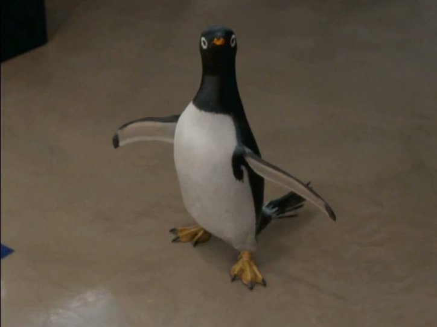
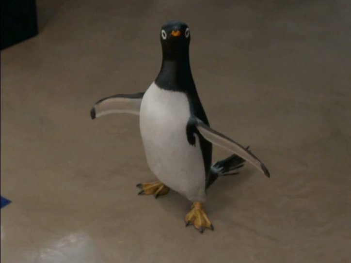

Why I love it
- Hilarious
- Based on the 1938 children's book of the same name
- Good to watch with kids
Favorite actor
Polar Penguin (starred as Captain)
Protagonist
Tom Popper (performed by Jim Carrey)
Polar Penguin (starred as Captain)
Tom Popper (performed by Jim Carrey)